3 Ökologische Nachhaltigkeit
Die Wirtschaft ist nicht nur in die Gesellschaft, sondern auch in die Natur eingebettet. Menschen sind Lebewesen und daher auf materielle Ressourcen angewiesen, um ihre Bedürfnisse zu erfüllen. Sie benötigen ausserdem intakte Ökosysteme und ein für menschliche Besiedlung geeignetes Klima. Wenn wir von „ökologischer Nachhaltigkeit” sprechen, meinen wir im Allgemeinen den Schutz der Vielfalt und Funktionsfähigkeit natürlicher Ökosysteme und der von ihnen bereitgestellten Dienstleistungen für künftige Generationen. Dies ist eine anthropozentrische Definition, da sie sich auf menschliche Aktivitäten konzentriert und darauf, wie diese die langfristige Nachhaltigkeit der Natur zum Nutzen des Menschen sicherstellen sollen. Diese Perspektive spiegelt sich auch in unserem Alltag und unserer dualistischen Trennung von „Mensch” und „Umwelt” wider, eine Trennung, die auf das 19. Jahrhundert zurückgeht und bis heute anhält. So unterteilen wir die Wissenschaft beispielsweise in „Naturwissenschaften” und „Sozialwissenschaften”, und unsere Analysen konzeptualisieren Umweltschäden oft als „Externalitäten”. Ein anderes Verständnis von ökologischer Nachhaltigkeit betont die Bedeutung der Aufrechterhaltung der Selbstregulierung des Erdklimasystems. Diese Sichtweise hebt die Wechselwirkungen und Rückkopplungen zwischen verschiedenen Komponenten des Erdklimasystems hervor.
3.1 Die normative Dimension ökologischer Nachhaltigkeit
Obwohl unser Verständnis der Funktionsweise von Ökosystemen auf gründlich erforschten empirischen Informationen basiert (und damit „Systemwissen” darstellt), bleibt ökologische Nachhaltigkeit ein normatives Konzept. Das bedeutet, dass sie nicht nur auf wissenschaftlichen Erkenntnissen, sondern auch auf einer ethischen Beurteilung beruht (Figure fig-normative-dimension). Die verschiedenen Interpretationen ökologischer Nachhaltigkeit bieten unterschiedliche Antworten auf die Frage, was erhalten werden sollte und warum. Jeder Ansatz zur ökologischen Nachhaltigkeit drückt daher den angestrebten Zustand der ökologischen Umwelt aus, sowohl heute als auch in der Zukunft – welche Aspekte der Natur von der Gegenwart in die Zukunft erhalten oder bewahrt werden sollen. Wenn wir beispielsweise über Ökosystemdienstleistungen sprechen, ist die Absicht oft, Ökosysteme so zu erhalten, dass sie unser eigenes Wohlergehen weiterhin unterstützen und aufrechterhalten (in diesem Sinne ist es eine anthropozentrische Perspektive).
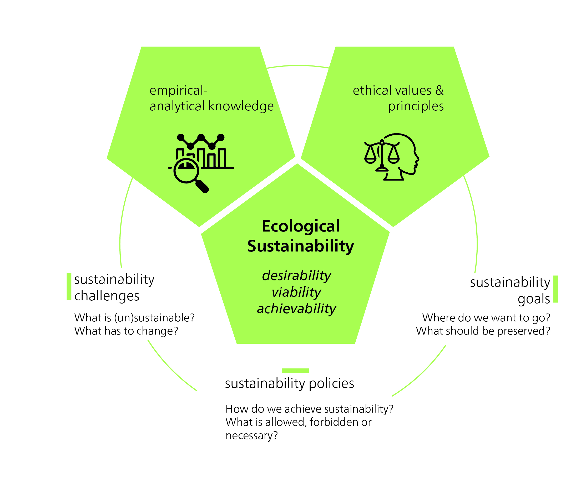
Ethische Urteile und Begründungen prägen, welche ökologischen Eigenschaften und Funktionen wir für künftige Generationen erhalten und welche wir als intrinsisch wertvoll in der Natur erachten. Was ist ein wünschenswerter Zustand für Ökosysteme, und warum? Welche Aspekte der ökologischen Umwelt verdienen Schutz, und welches Ziel verfolgt dieser Schutz? Ist es notwendig, Ökosysteme so unberührt wie möglich zu halten, und wie definieren wir „Natürlichkeit”? In welchem Umfang sollten wir Ökosysteme uneingeschränkt für menschliche Zwecke nutzen, und gibt es Bereiche, die wir Organismen überlassen sollten, mit minimalen menschlichen Eingriffen? Interpretationen ökologischer Nachhaltigkeit hängen von den verfolgten Zielen ab: für wen, warum und wie (Figure fig-normative-dimension).
Wildtierschutz: Sollten wir in natürliche Wildtierpopulationen eingreifen, um gefährdete Arten zu schützen und das Gleichgewicht der Ökosysteme zu erhalten? Oder sollten wir die Natur so unberührt wie möglich lassen, auch wenn dies den Verlust einiger Arten bedeutet?
Biotechnologische Eingriffe: Ist es moralisch vertretbar, biotechnologische Methoden wie Gentechnik einzusetzen, um die ökologischen Eigenschaften von Organismen zu verändern und möglicherweise Ökosysteme zu beeinflussen?
Schutz gefährdeter Arten: Sollten wir uns auf den Schutz und die Erhaltung gefährdeter Arten konzentrieren, um die Biodiversität zu erhalten, oder sollten wir uns auf die Erhaltung weit verbreiteter Arten konzentrieren, die für die menschliche Ernährung oder die Wirtschaft wichtiger sind?
Schutz von Ökosystemen: Sollten wir Schutzgebiete einrichten, um bedrohte Ökosysteme und Arten zu erhalten, auch wenn dies lokale Gemeinschaften in ihren wirtschaftlichen Aktivitäten einschränkt? Wie können wir eine Balance zwischen Schutz und nachhaltiger Nutzung herstellen?
3.2 Ökosysteme, Ökosystemmanagement und Ökosystemdienstleistungen
Ein Ökosystem ist eine Gruppe von Lebewesen und ihrer physischen Umgebung, die miteinander interagieren. Ökosysteme können klein sein, wie ein Blumentopf, oder gross, wie ein Ozean. Wenn ähnliche Ökosysteme in einer grösseren Region mit demselben Klima vorkommen, werden sie als Biome bezeichnet. Energie- und Materialflüsse sind wichtig für das Funktionieren eines Ökosystems. Einige dieser Flüsse, wie der Kohlenstoffkreislauf, finden auf globaler Ebene statt, während andere stärker lokalisiert sind. Die meisten Ökosysteme beziehen ihre Energie von der Sonne und können das Erdklima durch ihre Wechselwirkungen beeinflussen (Britannica 2025).
Ökosystemdienstleistungen sind die Vorteile, die Menschen aus Ökosystemen wie Mangrovenwäldern, Ozeanen oder Feuchtgebieten ziehen. Zu den von Ökosystemen erbrachten Dienstleistungen gehören die Bereitstellung von sauberem Wasser, die Verhinderung von Überschwemmungen, die Förderung des Pflanzenwachstums und die Bereitstellung von Erholungsräumen. Das Millennium Ecosystem Assessment, das 2005 veröffentlicht wurde, unterteilt Ökosystemdienstleistungen in vier Kategorien (vgl. grüner Kasten in Figure fig-ecosystem): Versorgungsdienstleistungen, Regulierungsdienstleistungen, kulturelle Dienstleistungen und Unterstützungsdienstleistungen (Millenium Ecosystem Assessment 2005). Die Unterstützungsdienstleistungen, bei denen es sich in erster Linie um grundlegende biophysikalische Prozesse handelt, ermöglichen und gewährleisten die anderen Dienstleistungen.
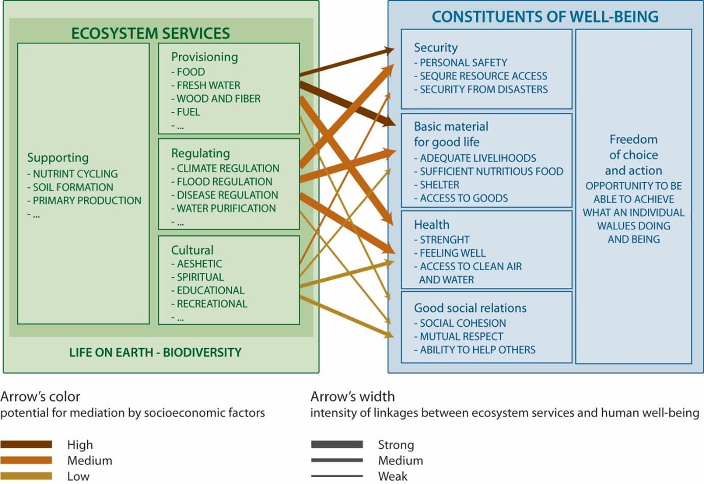
Laut Millenium Ecosystem Assessment (2005) können diese Ökosystemdienstleistungen unsere Lebensqualität und unsere Wirtschaft verbessern (vgl. blauer Kasten in Figure fig-ecosystem). Diese Betrachtungsweise von Ökosystemen sieht den Menschen zwar als von der Umwelt getrennt, betont aber die Relevanz von Ökosystemdienstleistungen für das menschliche Wohlergehen. Das Konzept der Ökosystemdienstleistungen zielt letztlich darauf ab, den Wert der Natur stärker in politische und wirtschaftliche Entscheidungen einzubeziehen. Das Konzept spielt jedoch auch in der Landschafts- und Raumplanung eine Rolle. Es wird beispielsweise genutzt, um zu analysieren, wie sich räumlich wirksame (rechtliche) Regelungen auf Ökosystemdienstleistungen und damit auf das menschliche Wohlergehen auswirken (vgl. Albert et al. 2016).
Diese Landschaft an der Ostküste Madagaskars bietet eine Fallstudie für Ökosystemdienstleistungen. Zu den Ökosystemdienstleistungen in diesem Gebiet gehören Brennholz, das von der lokalen Bevölkerung zum Kochen verwendet wird, und Reis, der ein Grundnahrungsmittel ist. Die Bezeichnung landwirtschaftlicher Produkte wie dieser als Ökosystemdienstleistungen verdeutlicht, dass sie erst durch menschliche Nachfrage zu „Dienstleistungen” werden. Ökosystemdienstleistungen sind in der Natur nicht per se gegeben: Sie stellen vielmehr eine Perspektive dar, durch die Menschen die Umwelt betrachten und beschreiben. Weitere Ökosystemdienstleistungen in dieser Landschaft umfassen den Wasserkreislauf, der für die lokale Bevölkerung lebenswichtig ist, da sie auf Flüsse als Trinkwasserquelle angewiesen ist. Wasser wird auch für die landwirtschaftliche Bewässerung und andere Zwecke genutzt. Die Klimaregulierung ist eine weitere bedeutende Dienstleistung, die sowohl lokal als auch global wichtig ist.
Diese Landschaft veranschaulicht klar, dass die Nachfrage nach Ökosystemdienstleistungen und deren Bedeutung je nach Person oder Gruppe variieren. Solche unterschiedlichen Ansprüche auf Ökosystemdienstleistungen aus demselben Land können zu Interessenkonflikten führen. Die Nachfrage nach landwirtschaftlichen Produkten oder Brennholz kann beispielsweise mit klimaregulierenden und biodiversitätsfördernden (internationalen) Ansprüchen an den Regenwald in Konflikt geraten.
Menschen haben viele Ökosystemdienstleistungen sowohl direkt als auch indirekt beeinflusst. Während diese Auswirkungen oft negativ waren, waren einige auch positiv. So hat beispielsweise die Ablösung natürlicher Ökosysteme durch kultivierte Agrarökosysteme den Wert der Ökosystemdienstleistungen für den Menschen erhöht. Nehmen wir als Beispiel Trockenwiesen und Weiden in der Schweiz. Erst durch jahrhundertelange Waldrodung und extensive landwirtschaftliche Nutzung in alpinen Lagen konnten die von diesen Gebieten erbrachten Ökosystemdienstleistungen (in diesem Fall die Futterproduktion) genutzt und gesteigert werden. Gleichzeitig beherbergten diese anthropogen beeinflussten Standorte seltene Wiesenpflanzen und Bestäuber und förderten so ein hohes Mass an Biodiversität. Diese Gebiete sind auch für den Tourismus von Bedeutung, da sie die alpine Landschaft massgeblich prägen. Folglich bieten diese extensiv genutzten Flächen im Allgemeinen eine grössere Multifunktionalität der Ökosystemdienstleistungen als intensiv bewirtschaftetes Grünland (Richter et al. 2024).
Viele der negativen Auswirkungen auf Ökosysteme und ihre Dienstleistungen sind direkte Folgen menschlicher Landnutzung und Überfischung. Darüber hinaus beeinträchtigen indirekte Faktoren wie der Klimawandel und invasive gebietsfremde Arten die Stabilität und Funktionsfähigkeit von Ökosystemen erheblich. Zwei Forschungsprojekte mit massgeblicher CDE-Beteiligung – Woody Weeds und Woody Weeds+ – haben gezeigt, dass invasive Gehölze wie Prosopis juliflora in Ostafrika grosse Auswirkungen auf die Biodiversität und die lokalen Lebensgrundlagen haben. Ursprünglich zur Bekämpfung von Wüstenbildung und Holzeinschlag eingeführt, verdrängt diese Art die einheimische Vegetation und ist ohne Verarbeitung nicht als Tierfutter geeignet (CDE-Projektwebsite).
3.2.1 Die monetäre Bewertung von Ökosystemmanagement
Der Begriff Naturdienstleistungen tauchte erstmals in der Publikation „How much are Nature’s Services Worth?” (Westman 1977) auf. Der synonym verwendete Begriff Ökosystemdienstleistungen wurde einige Jahre später geprägt (Ehrlich and Ehrlich 1981). Das Konzept der Ökosystemdienstleistungen und das damit verbundene Denken sind eng mit der Wirtschaftsphilosophie und -praxis verknüpft (Gómez-Baggethun et al. 2010). Rund 20 Jahre nach der Einführung von „Naturdienstleistungen” schätzten Robert Costanza und Kolleg*innen, dass der globale Wert von 17 Ökosystemdienstleistungen 33 Billionen US-Dollar pro Jahr betrage (Costanza et al. 1997). Eine Neuberechnung im Jahr 2011 ergab, dass dieser Wert bereits um 4,3 bis 20,2 Billionen US-Dollar pro Jahr gesunken war (Costanza et al. 2014). Bis 2050 wird vorhergesagt, dass der Wert der Ökosystemdienstleistungen je nach Landnutzungsszenario entweder um bis zu 51 Billionen US-Dollar pro Jahr sinken oder um bis zu 30 Billionen US-Dollar pro Jahr steigen wird (Kubiszewski et al. 2017).
Die Berechnung des monetären Werts von Ökosystemdienstleistungen umfasst typischerweise drei Schritte und erfordert hochwertige und differenzierte Daten. 1) Im ersten Schritt wird die Veränderung der Ökosystemdienstleistungen nach einer Intervention gemessen; der Fokus liegt dabei nicht auf dem Status quo, sondern auf der Differenz. 2) Im zweiten Schritt wird die Auswirkung dieser Veränderung auf das sozioökonomische Wohlergehen der Menschen bewertet. 3) Im dritten und letzten Schritt wird die resultierende Veränderung der Produktivität oder des Wohlstands monetär bewertet. Es gibt viele verschiedene Methoden zur Berechnung des monetären Werts von Ökosystemdienstleistungen (Figure fig-monetary-value). Eine davon ist das „grüne Rechnungswesen” (Green Accounting), das vorhandene Marktwerte, falls verfügbar, oder Tauschwerte als Annäherung verwendet (z. B. Vergleich von Lawinenbarrieren und Schutzwäldern). Eine weitere Methode ist die Kosten-Nutzen-Analyse, die in zwei Typen unterteilt werden kann: angegebene Präferenzen und offenbarte Präferenzen.
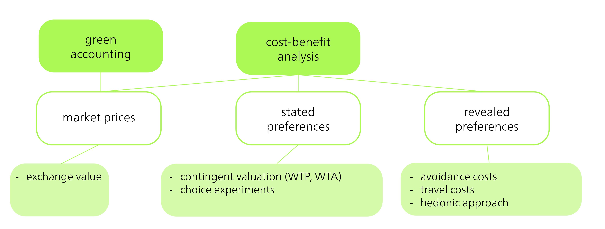
Bei angegebenen Präferenzen geben Personen (z. B. in einer Umfrage) an, inwieweit sie bereit wären, für bestimmte Ökosystemdienstleistungen zu zahlen oder welche Veränderungen sie akzeptieren würden (Kontingente Bewertung). Eine weitere Variante dieser Methode beinhaltet die Wahl zwischen verschiedenen (meist suboptimalen) Optionen, die jeweils einen Kompromiss auf der Grundlage von Veränderungen der Ökosystemdienstleistungen darstellen (die dann ökonometrisch analysiert werden). Im Gegensatz dazu basieren offenbarte Präferenzen auf dem tatsächlichen Verhalten. Dabei werden beispielsweise Vermeidungskosten analysiert (z. B. wie viel Menschen für Lärmschutzwände bezahlen) oder Reisekosten berechnet (wobei angenommen wird, dass der Zeit- und Reisekostenaufwand für den Besuch eines Ortes den Wert des Ortes und damit im weiteren Sinne eine Ökosystemdienstleistung widerspiegelt). Weitere Methoden umfassen hedonische Ansätze, um zu bestimmen, inwieweit günstige oder ungünstige Umwelteinflüsse und damit deren Qualität den Wert einer Immobilie beeinflussen können.
Jede dieser Methoden hat ihre Vor- und Nachteile. Sie werden hauptsächlich für ihre einseitigen Bewertungen und ihre mangelnde Berücksichtigung sozialer Ungleichheiten, Machtverhältnisse und kultureller Unterschiede kritisiert. Folglich sind diese Methoden nur begrenzt in der Lage, faire und ökologisch nachhaltige Entscheidungen zu fördern.
Das Prinzip hinter Zahlungen für Ökosystemdienstleistungen (Payments for Ecosystem Services, PES) beinhaltet die Entschädigung von Landnutzerinnen für die Aufrechterhaltung einer Komponente einer bestimmten Ökosystemdienstleistung. Eine solche Entschädigung kann beispielsweise von Organisationen oder Unternehmen gezahlt werden, für die diese spezifischen Ökosystemdienstleistungen wichtig sind. Ein bekanntes Beispiel für PES ist das Programm „Pagos por Servicios Ambientales” (PSA) in Costa Rica. Dieses seit 1997 laufende nationale Programm wurde eingerichtet, um Entwaldung zu reduzieren und Wiederaufforstung zu fördern, indem Grundeigentümerinnen dafür bezahlt werden, Waldflächen zu erhalten, aufzuforsten oder nachhaltig zu bewirtschaften. Die Zahlungen sollen die Bereitstellung von Ökosystemdienstleistungen wie Kohlenstoffbindung, Wassererhalt, Biodiversitätsschutz und Landschaftsschönheit fördern. Die Zahlungen in diesem Projekt stammen aus verschiedenen Quellen, darunter eine Kraftstoffsteuer und internationale Mittel von Organisationen, die an CO2-Kompensation interessiert sind. Studien zeigen, dass das Programm die Entwaldungsrate im Land erheblich reduziert und die Erhaltung der Biodiversität gefördert hat, während gleichzeitig das Einkommen der Grundeigentümer*innen gestiegen ist (Porras et al. 2013).
3.2.2 Kritik an Ökosystemdienstleistungen und weitere sowie alternative Konzepte
Das Konzept der Ökosystemdienstleistungen wurde zwar in der wissenschaftlichen und politischen Debatte anerkannt und angewendet, es wurde aber auch vielfach kritisiert (vgl. z. B. Kosoy and Corbera 2010; Norgaard 2010). Ein Argument lautet, dass wir durch die Fokussierung auf Ökosystemdienstleistungen die komplexen und vielfältigen Werte von Ökosystemen auf ihren monetären Nutzen für den Menschen reduzieren (vgl. Schröter et al. 2014). Diese wirtschaftliche Reduktion der Natur vernachlässigt die nicht quantifizierbaren, aber dennoch wichtigen Aspekte der Natur, wie spirituelle oder intrinsische Werte (Fairhead et al. 2012). Die Kommodifizierung der Natur durch Ökosystemdienstleistungen könnte letztlich auch zu einem ausbeuterischen Verhältnis zwischen Mensch und Natur führen (vgl. Schröter et al. 2014) oder zu einer Verschärfung sozialer Ungleichheiten zwischen mächtigen Akteuren und marginalisierten Gruppen (Dawson et al. 2021), da das Konzept Gerechtigkeit nicht explizit berücksichtigt (Loos et al. 2023, 478). In einigen Fällen wird sogar angenommen, dass das Konzept der Ökosystemdienstleistungen mit dem Biodiversitätsschutz in Konflikt geraten und ihn untergraben könnte (vgl. Schröter et al. 2014).
„Die Begeisterung für die Optimierung der Wirtschaft durch die Einbeziehung von Ökosystemdienstleistungen hat uns für die wichtigere Frage blind gemacht, wie wir die wesentlichen institutionellen Veränderungen herbeiführen werden, um den menschlichen Druck auf Ökosysteme erheblich zu reduzieren, insbesondere durch die Reichen, und um uns anzupassen und effektiv mit den rasanten Ökosystemveränderungen umzugehen, die durch bestehende und absehbare Klimadynamiken angetrieben werden.” (Norgaard 2010, 1220)
Als Reaktion auf diese Kritik hat die Intergovernmental Platform on Biodiversity and Ecosystem Services (IPBES) (vgl. Kapitel Biodiversitätsverlust) das Konzept der Ökosystemdienstleistungen weiterentwickelt und ein weiteres Konzept entwickelt: das der Naturbeiträge für Menschen (Nature’s Contributions to People, NCP). NCPs werden definiert als „alle positiven Beiträge oder Vorteile und gelegentlich negativen Beiträge, Verluste oder Nachteile, die Menschen aus der Natur gewinnen.” (Pascual et al. 2017, 9). Das Konzept ähnelt dem der Ökosystemdienstleistungen, geht aber weiter und erkennt an, dass die Natur und ihre Beiträge zu einem guten Leben je nach kulturellem und institutionellem Kontext unterschiedlich wahrgenommen und betrachtet werden können. Das Konzept strebt die Einbeziehung verschiedener Weltanschauungen an, wie z. B. indigener Wissenssysteme, und berücksichtigt damit sowohl intrinsische (d. h. nicht-anthropozentrische) als auch relationale Werte der Natur (Díaz et al. 2018). Insgesamt berücksichtigt dieser Ansatz auch kontextspezifische Perspektiven und gibt Gerechtigkeitsdimensionen stärker Rechnung als das Konzept der Ökosystemdienstleistungen (Loos et al. 2023).
Jedoch sind auch solche pluralen Bewertungen nicht ohne Kritik und stellen verschiedene Herausforderungen dar. So weisen Jacobs et al. (2023) darauf hin, dass aktuelle Ansätze zur Integration mehrerer Werte und Perspektiven in Ökosystembewertungen das Risiko bergen, lediglich Pseudo-Partizipation zu fördern, während bestehende Macht- und Diskriminierungsstrukturen unverändert bleiben. Plurale Bewertungen streben Inklusivität und Demokratie an, können jedoch bei unzureichender Gestaltung unbeabsichtigt zu Konflikten, Machtungleichgewichten und unklaren Ergebnissen führen. Wissenschaftler*innen haben auch das oben erwähnte NCP-Konzept kritisiert, das oft als unzureichende Weiterentwicklung des utilitaristischen Umweltschutzes angesehen wird. Dabei handelt es sich um eine stark westliche und anthropozentrische Perspektive, die eine dualistische Trennung von Mensch und Natur aufrechterhält (vgl. Muradian and Gómez-Baggethun 2021). Muradian and Gómez-Baggethun (2021) [p. 7] schlagen vor, dass „um transformativen Wandel in den Mensch-Natur-Beziehungen herbeizuführen, wir einen Wechsel von einer Moral der Nützlichkeit zu einer Moral der Fürsorge, eine Neuverteilung von Eigentumsrechten und die Ausdehnung der Gerechtigkeitsgemeinschaft auf nicht-menschliche Entitäten brauchen.” Ein bemerkenswertes Beispiel für diese Transformation ist die Anerkennung des Whanganui-Flusses in Neuseeland als juristische Person im Jahr 2017 (vgl. Charpleix 2018).
3.3 Planetare Grenzen
Die gegenwärtige Epoche wird als Anthropozän bezeichnet, weil menschliche Aktivitäten einen immer tiefgreifenderen Einfluss auf die Erde und ihre Systeme ausüben. Obwohl dieser Begriff von geologischen Fachgremien (noch) nicht als offizielle geologische oder geochronologische Epoche anerkannt wurde (Zhong 2024), beschreibt er den enormen menschlichen Einfluss auf die Umwelt. Es gibt keine einheitliche Definition über den Ursprung des Anthropozäns; mögliche Marker umfassen den menschlichen Einfluss auf Treibhausgaskonzentrationen durch den Reisanbau, die globale Verbreitung von Radioaktivität durch Atomtests oder das Auftreten von Kunststoffpartikeln in geologischen Sedimenten. Als Beginn des Anthropozäns gilt allgemein die Industrielle Revolution.
Eine quantitative Definition ökologischer Nachhaltigkeit wurde von Rockström et al. (2009) und Steffen et al. (2015) vorgeschlagen, die neun planetare Grenzen identifizierten: Klimawandel, Integrität der Biosphäre, Landnutzungsveränderungen, Süsswasserveränderungen, biogeochemische Kreisläufe, Ozeanversauerung, atmosphärische Aerosollast, stratosphärischer Ozonabbau sowie neuartige Stoffe. Diese planetaren Grenzen dienen als wissenschaftlicher Referenzpunkt und zeigen die Grenzen auf, innerhalb derer unsere globalen sozioökonomischen Systeme operieren müssen, um das Wohlergehen der Menschheit zu gewährleisten.
Dieses Kapitel konzentriert sich auf drei dieser Grenzen, die hier als Klimawandel, Landnutzungsveränderungen und Biodiversitätsverlust bezeichnet werden. Diese drei Krisen verstärken sich gegenseitig und bilden ein komplexes Geflecht von Wechselwirkungen.
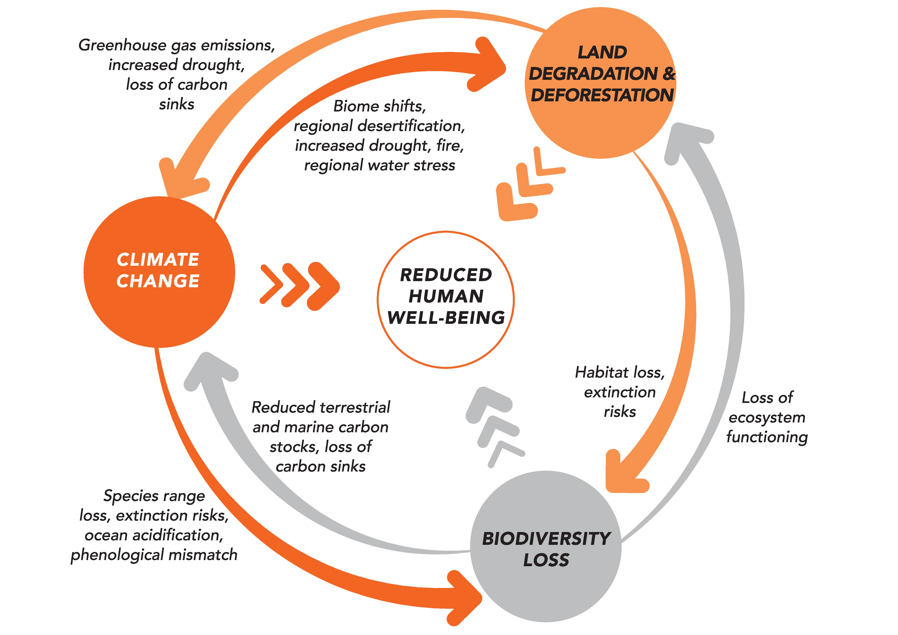
3.3.1 Die Klimakrise (Klimawandel)
Klimawandel – oder, um einen Begriff zu verwenden, der die Dringlichkeit besser verdeutlicht, die Klimakrise – ist eines der drängendsten Probleme unserer Zeit. Er erfährt grosse mediale Aufmerksamkeit und ist beispielhaft für ein „wicked problem” (Hulme 2009, 9). Er steht im Mittelpunkt der Fridays-for-Future-Bewegung, die von Greta Thunberg initiiert wurde, und ist zumindest ein Gesprächsthema auf der (globalen) politischen Bühne. Während lokale Bedingungen und natürliche Schwankungen zu gewissen Unsicherheiten in Klimamodellen und Statistiken beitragen, zeigt die wissenschaftliche Evidenz klar, dass steigende globale Temperaturen einen enormen Einfluss auf die ökologische Nachhaltigkeit und das menschliche Wohlergehen haben. Deshalb ist der Klimawandel eine der neun planetaren Grenzen.
Der Begriff Klima beschreibt den durchschnittlichen Zustand der Atmosphäre (Temperatur, Niederschlag, Luftfeuchtigkeit usw.) über einen Zeitraum von mindestens 30 Jahren an einem bestimmten Ort. Im Gegensatz dazu beschreibt Wetter den kurzfristigen Zustand (d. h. von Sekunden bis Wochen) und umfasst Wetterphänomene wie Gewitter oder Hitzewellen (NCCS, n.d.). Das Klimasystem wiederum umfasst nicht nur die Atmosphäre, sondern auch die Hydrosphäre (Ozeane, Seen, Flüsse, Grundwasser), die Kryosphäre (Gletscher, Schneedecke, Meeres- und Seeeis, Permafrost), die Biosphäre (Lebewesen) und die Lithosphäre (Böden bzw. die äusserste Schicht der Erde). Es bezeichnet insbesondere die physikalischen, biologischen und chemischen Wechselwirkungen und Abhängigkeiten zwischen diesen fünf Sphären. Zusätzlich wird das Klimasystem durch Strahlung aus dem Weltraum beeinflusst (vgl. Abbildung unten).
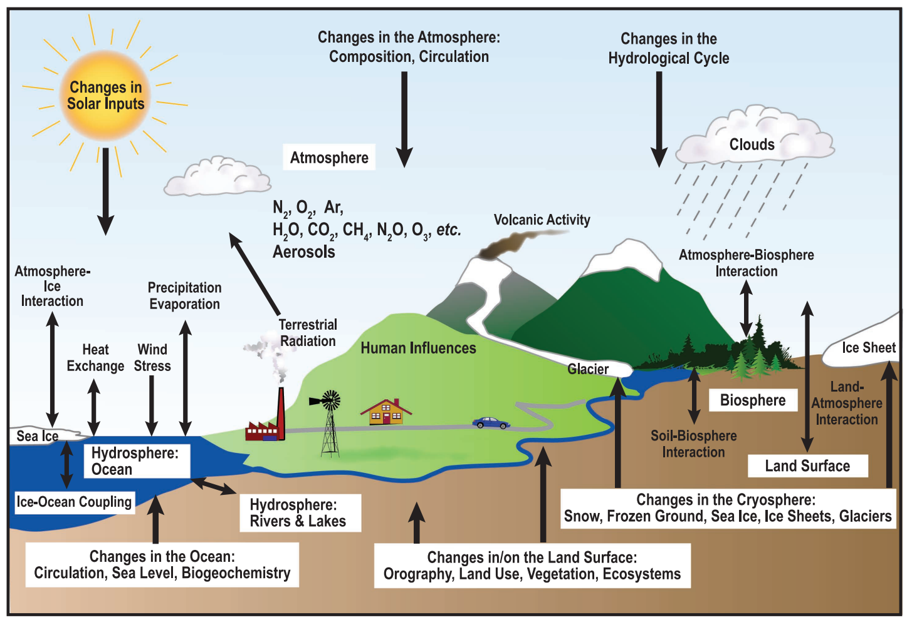
Material- und Energieflüsse zwischen den verschiedenen Komponenten des Klimasystems, wie der Kohlenstoffkreislauf, können als Rückkopplungsmechanismen wirken. Solche Rückkopplungsmechanismen haben wir bereits im Kapitel über systemische Effekte kennengelernt (vgl. Kapitel 2). Sie können entweder positiv sein, wenn die Rückkopplung die ursprüngliche Veränderung verstärkt, oder negativ, wenn die Rückkopplung versucht, die ursprüngliche Veränderung umzukehren. Hier sind Beispiele für einen positiven und einen negativen Rückkopplungseffekt im Klimasystem:
Positive Rückkopplung: Wenn die Erdoberflächentemperatur steigt, nimmt auch die Wasserverdunstung zu, was eine positive Rückkopplungsschleife erzeugt. Wasserdampf ist das bedeutendste Treibhausgas in der Atmosphäre. Mit steigenden Temperaturen gelangt mehr Wasserdampf in die Atmosphäre, was die Wärmereflexion zur Erdoberfläche verstärkt und zu weiterer Verdunstung führt. Dieser Kreislauf beschleunigt die Erwärmung und die Ansammlung von atmosphärischem Wasserdampf. Auf der Venus verstärkte dieser Rückkopplungsmechanismus den Treibhauseffekt so weit, dass alles flüssige Oberflächenwasser verdampfte.
Negative Rückkopplung: Erhöhtes atmosphärisches CO2 kann die Photosynthese fördern, ein Prozess, der als CO2-Düngungseffekt bekannt ist und ein Beispiel für einen negativen Rückkopplungsmechanismus darstellt. Obwohl ein Anstieg des Kohlendioxids dazu führen kann, dass Pflanzen mehr Kohlenstoff in Biomasse binden als zuvor, reicht dies bei weitem nicht aus, um den steigenden CO2-Gehalt in der Atmosphäre zu kompensieren, der hauptsächlich durch die Verbrennung fossiler Brennstoffe und Landnutzungsveränderungen verursacht wird. Die Fähigkeit der Pflanzen, zusätzliches CO2 aufzunehmen, wird durch verschiedene Faktoren wie Nährstoffverfügbarkeit, Wasserressourcen und Temperaturbedingungen begrenzt. Daher ist dieser Rückkopplungsmechanismus unzureichend, um den Anstieg der atmosphärischen CO2-Konzentration durch menschliche Aktivitäten zu kompensieren.
Positive Rückkopplungsmechanismen oder das Versagen negativer Rückkopplung können dazu führen, dass bedeutende Schwellenwerte im Klimasystem überschritten werden. Diese Schwellenwerte werden als Kipppunkte des Klimasystems bezeichnet und sind eng mit dem Konzept der planetaren Grenzen verknüpft (vgl. Kapitel 2.4 zur Grossen Transformation). Wenn diese Schwellenwerte überschritten werden, können abrupte und oft irreversible Veränderungen im Klimasystem auftreten, die das Klima destabilisieren und zu einem beschleunigten Klimawandel führen. Das Konzept der Kipppunkte unterstreicht die Dringlichkeit, die globale Erwärmung zu begrenzen und Treibhausgasemissionen zu reduzieren. Werden diese Schwellenwerte überschritten, wird es zunehmend schwieriger, den Klimawandel zu kontrollieren oder seine Auswirkungen zu minimieren. Letztlich riskiert die Erde, zu einem grossen Treibhaus zu werden (Hothouse Earth-Szenario) (vgl. Figure fig-hothouse-earth).
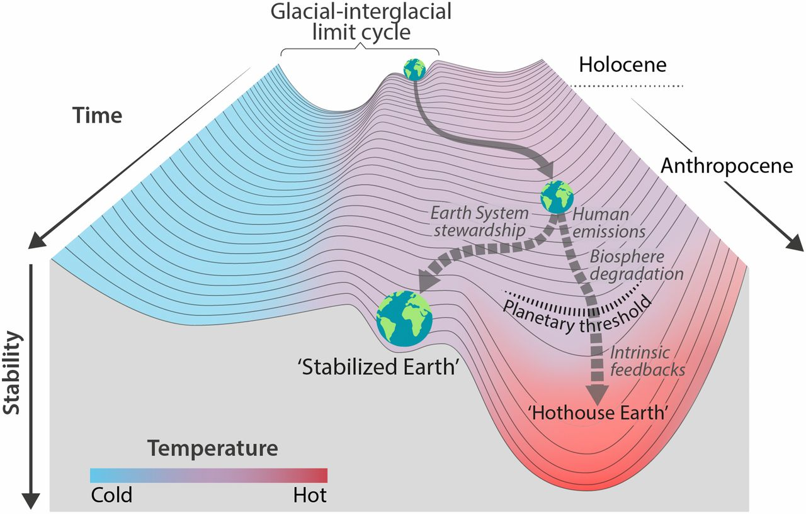
Es wird angenommen, dass insgesamt 16 Kipppunkte existieren (Figure fig-16-tipping-points), darunter die sibirischen Permafrostböden oder der Westantarktische Eisschild. Diese Kipppunkte haben unterschiedliche Schwellenwerte, was bedeutet, dass einige früher – bei geringerer globaler Erwärmung – erreicht werden als andere. Wenn diese Kipppunkte erreicht oder überschritten werden, können sie selbstverstärkende Rückkopplungseffekte auslösen, die zu weiterer Erwärmung führen, weitere Kipppunkte initiieren und den Klimawandel intensivieren. Einige dieser Kipppunkte befinden sich bereits in einem kritischen Zustand, wie Johan Rockström, einer der Begründer des Konzepts der Planetaren Grenzen, eindrücklich erklärt (Rockström 2024). Im Amazonas beispielsweise emittieren einige Gebiete mittlerweile mehr CO2 als sie absorbieren – sie werden zu Kohlenstoffquellen statt zu -senken – aufgrund von Waldbränden, klimabedingtem Wasserstress und Entwaldung (vgl. Kapitel 3.3.2 zu Landnutzungsveränderungen) (Gatti et al. 2021; Harris et al. 2021). Folglich befindet sich der Amazonas bereits im Wandel und verliert an Resilienz (Flores et al. 2024). Ein weiterer besorgniserregender und sehr realer Kipppunkt ist die Atlantische Umwälzzirkulation (Atlantic Meridional Overturning Circulation, AMOC) (Rahmstorf 2024a, 2024b). Die AMOC nähert sich ihrem Kipppunkt (van Westen et al. 2024), und Projektionen deuten darauf hin, dass sie schon Mitte dieses Jahrhunderts kollabieren könnte (Ditlevsen and Ditlevsen 2023). Ein Kollaps würde zu häufigeren europäischen Hitzewellen und einem Meeresspiegelanstieg entlang der nordöstlichen US-Küste führen (Rahmstorf 2024a).
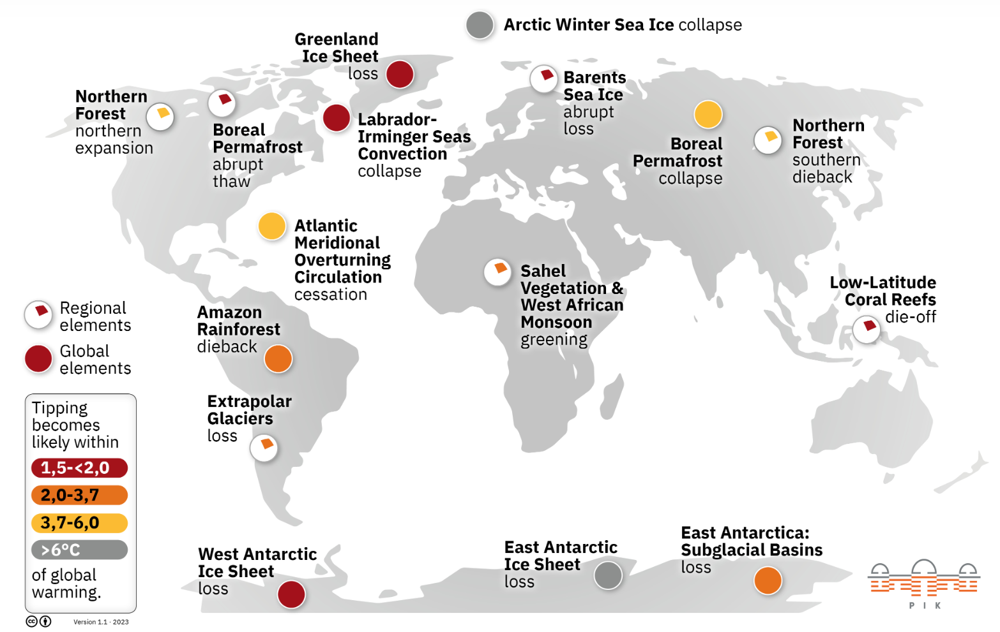
Doch was verursacht die Erwärmung der Erde und den Klimawandel? Neben natürlichen Ursachen wie geologischen, langfristigen Faktoren (Erdachsenrotation, Milanković-Zyklen, Vulkanausbrüche) ist der primäre Treiber der globalen Erwärmung der Treibhausgaseffekt. Der Treibhausgaseffekt ist ein Prozess, bei dem kurzwellige Sonnenstrahlung in die Erdatmosphäre eindringt und von der Erdoberfläche als langwellige Infrarotstrahlung wieder abgestrahlt wird. Treibhausgase – wie Kohlendioxid, Methan und Wasserdampf – absorbieren einen Teil dieser Infrarotstrahlung und emittieren sie in alle Richtungen, wodurch ein Teil der Wärme zur Erdoberfläche zurückgelangt. Ohne diesen Effekt wäre die Erde zu kalt, um Leben zu ermöglichen. Heute befinden sich jedoch aufgrund anthropogener Emissionen zu viele Treibhausgase in der Atmosphäre, was zur Erwärmung der Erde führt.
Der grösste Anteil der menschlichen CO2-Emissionen, rund ¾ des globalen Gesamtvolumens, stammt aus der Energieproduktion, d. h. in erster Linie aus der Strom- und Wärmeerzeugung (Figure fig-global-greenhouse-gas-emissions). Dies ist hauptsächlich auf die Verbrennung von Kohle, Gas und Öl zurückzuführen, mit Emissionen aus Industrie (24,2% des globalen Gesamtvolumens), Transport (16,2%), Gebäuden (17,5%) und Landwirtschaft (18,4%). Die Haupttreiber der landwirtschaftlichen Emissionen sind die Viehzucht, die Entwaldung für landwirtschaftliche Nutzflächen und der Einsatz von Stickstoffdünger auf landwirtschaftlichen Böden.
Im Transportsektor macht der Luftverkehr 1,9% der globalen Emissionen aus (vgl. Abbildung unten). In der Schweiz hingegen entfallen auf Flüge rund 11% der nationalen Emissionen. Diese Flugverkehrsemissionen sind grösstenteils dem internationalen Luftverkehr zuzuschreiben (FOEN 2025), wobei der Flughafen Basel-Mulhouse, der sich auf französischem Boden befindet, nicht in die Berechnungen einfliesst. Trotz dieser Evidenz hat die Schweiz noch keine CO2-Steuer auf Kerosin (den Hauptbestandteil des Flugzeugtreibstoffs) eingeführt, obwohl eine solche auf fossile Brennstoffe wie Heizöl und Erdgas besteht. Es ist jedoch anzumerken, dass die Klimawirkung nicht allein durch Treibhausgasemissionen bestimmt wird (Allen et al. 2018; Lee et al. 2021; Neu 2021). Das Erwärmungspotenzial des Flugverkehrs kann daher deutlich höher sein als durch die Treibhausgasemissionen allein angezeigt wird, da auch Nicht-CO2-Effekte von Flügen – wie Wasserdampf, Stickoxide (NOx) und Russ – das Klima beeinflussen (Lee et al. 2021).
Global haben die Flugverkehrsemissionen seit 1990 mehr als verdoppelt, getrieben hauptsächlich durch den internationalen Luftverkehr. Trotz eines starken Einbruchs der Flugzahlen im Jahr 2020 infolge der Pandemie haben sich die Flugverkehrsemissionen erholt und werden voraussichtlich in den kommenden Jahren die Rekordzahlen von 2019 übertreffen.
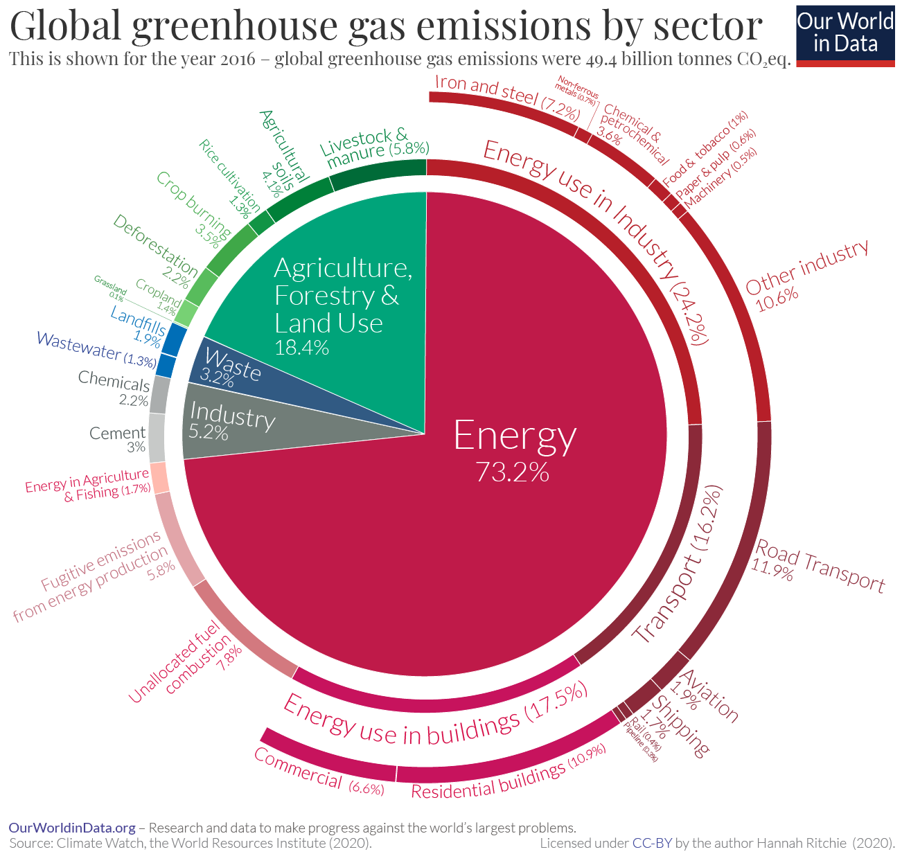
Jüngste Berechnungen und Klimaberichte zeigen, dass die Erdoberflächentemperatur in den letzten 10 Jahren (2014–2023) im Vergleich zum vorindustriellen Niveau (1850–1900) um rund 1,2°C gestiegen ist (UN 2024). Zudem war 2023 das wärmste Jahr seit Beginn der Aufzeichnungen, mit einer globalen Oberflächentemperatur von 1,45°C über dem vorindustriellen Referenzwert. Das mag nicht viel klingen, bedeutet aber angesichts der enormen Grösse und Wärmespeicherkapazität der Ozeane einen erheblichen Wärmeanstieg (Ritchie 2020).
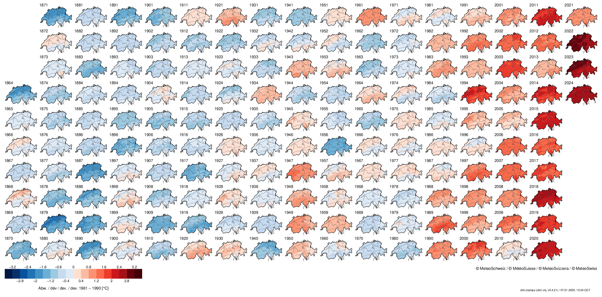
Das Pariser Klimaabkommen, das im Dezember 2015 verabschiedet wurde, war der erste internationale Vertrag, in dem Industrie- und Schwellenländer gemeinsam zusagten, die Treibhausgasemissionen zu reduzieren. Sein Kernziel ist es, den globalen Temperaturanstieg auf maximal 2°C zu begrenzen, mit Bemühungen um eine Beschränkung auf 1,5°C gegenüber dem vorindustriellen Niveau. Im Jahr 2018 veröffentlichte der Zwischenstaatliche Ausschuss für Klimaänderungen (IPCC) einen Sonderbericht mit einigen bemerkenswerten Erkenntnissen: vor allem, dass wir nur noch wenige Jahre – bis 2030 – Zeit haben, um zu verhindern, dass die 2°C-Grenze überschritten wird. Die nächste wichtige Entscheidung im Rahmen der internationalen Klimabemühungen im Anschluss an das Pariser Abkommen war die Klimakonferenz COP 27 im Jahr 2022. Auf der COP 27 einigten sich die Unterzeichnenden auf die Einrichtung des Fonds für Verluste und Schäden (Loss and Damage Fund) – das Ergebnis jahrzehntelanger Diskussionen –, der Entwicklungsländern nach extremen Wetterereignissen finanzielle Unterstützung ermöglichen soll.
Der Zwischenstaatliche Ausschuss für Klimaänderungen (IPCC), 1988 von den Vereinten Nationen und der Weltorganisation für Meteorologie gegründet, fasst die wissenschaftliche Forschung zum Klimawandel für politische Entscheidungsträger*innen weltweit zusammen. Seine regelmässig erscheinenden IPCC-Berichte liefern eine umfassende Bewertung des aktuellen Wissensstands zum Klimawandel, einschliesslich der physikalischen Grundlagen, Auswirkungen, Risiken und Anpassungsstrategien. Diese Berichte basieren auf Tausenden von Studien und gelten als die massgeblichste Informationsquelle zum Klimawandel. Die IPCC-Berichte dienen als Grundlage für internationale Verhandlungen und nationale Klimapolitiken, einschliesslich des Pariser Abkommens von 2015.
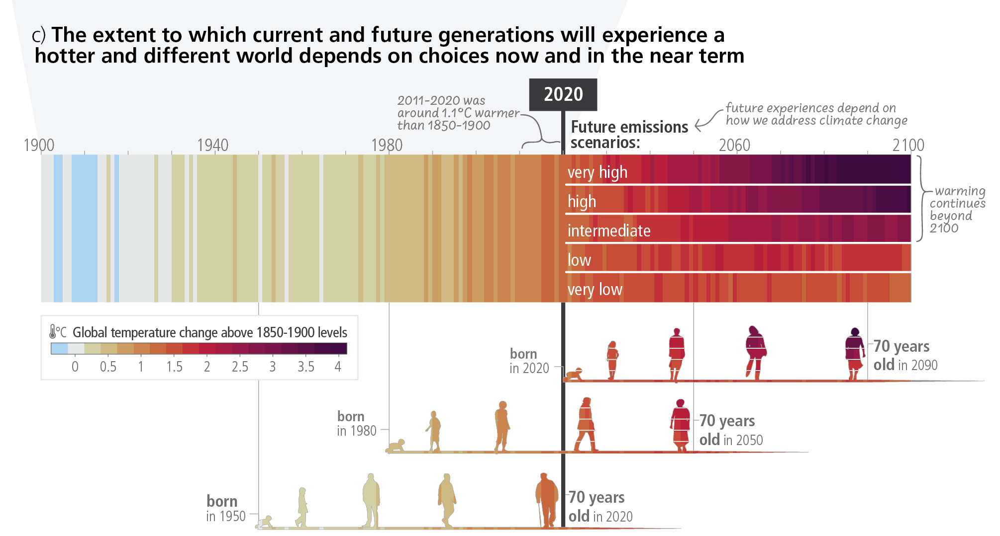
Doch was ist nötig, um zu verhindern, dass die Temperatur um mehr als 1,5 Grad ansteigt? Eine ganze Menge. Die anthropogenen CO2-Emissionen müssen zwischen 2010 und 2030 um 45% sinken, und die Netto-CO2-Emissionen müssen bis 2050 auf null reduziert werden. Während wir für marginale Aktivitäten wie Autokäufe oder Gebäudesanierungen grünere Technologien einsetzen, riskieren wir dennoch, die ernsthafte Bedrohung durch den bereits in der Atmosphäre vorhandenen Kohlenstoff zu vernachlässigen. Es ist wichtig, zwischen laufenden Emissionen (Fluss) und dem angesammelten atmosphärischen Kohlenstoff (Bestand) zu unterscheiden. Der Fluss spielt für den Planeten eine untergeordnete Rolle – es ist der Bestand, der die globale Erwärmung antreibt. Der Klimawandel ist daher in erster Linie ein Bestandsproblem und kein Flussproblem. Dies ist ein anspruchsvolles Konzept, nicht nur für Laien. Tatsächlich stellten Sterman and Sweeney (2007) fest, dass die meisten Erwachsenen Schwierigkeiten hatten, den Bestandsaspekt des Klimawandels zu erfassen.
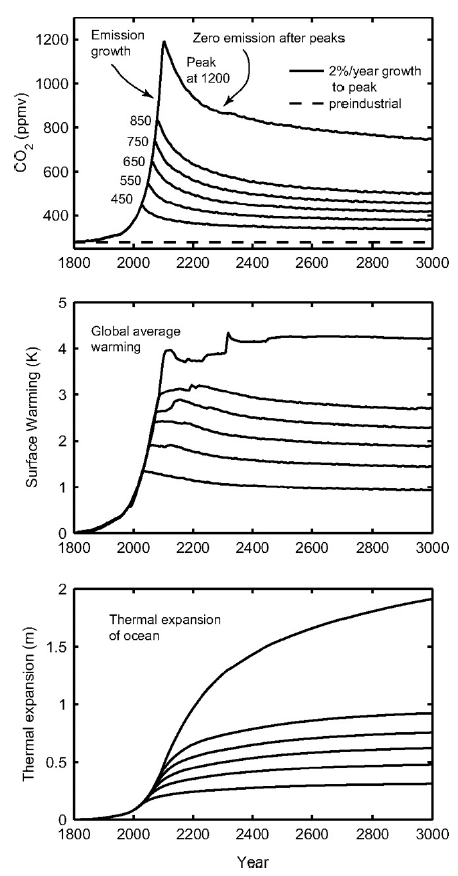
Ein wirksames mentales Modell ist die Badewannen-Analogie: Wenn der Zufluss durch den Hahn (d. h. unsere Emissionen, der Fluss) den Abfluss (Kohlenstoffaufnahme durch Regenwälder, Ozeane usw.) übersteigt, steigt der Wasserspiegel (der atmosphärische Kohlenstoffbestand). Die letzten fünf Jahre und zwanzig der letzten zweiundzwanzig Jahre waren die wärmsten seit Beginn der Aufzeichnungen. Dieser Erwärmungstrend ist eine direkte Folge des steigenden Wasserstands in dieser „Badewanne”.
Auswirkungen: Es wird erwartet, dass der Klimawandel eine Reihe direkter und indirekter Folgen hat, von denen einige bereits eintreten. Dazu gehören der Meeresspiegelanstieg, schwindende Gletscher, Bedrohungen der Wasser- und Ernährungssicherheit, eine Zunahme extremer Wetterereignisse, negative gesundheitliche Auswirkungen im Zusammenhang mit Temperatur, Hitzewellen, Dürren und Starkniederschlägen, Waldbrände sowie eine Zunahme geomorphologischer Aktivitäten und damit verbundener Naturgefahren infolge des Permafrosttauens.
3.3.2 Landnutzungsveränderungen
Landnutzungsveränderungen – wie Entwaldung für die Landwirtschaft oder städtische Expansion – haben einen erheblichen Einfluss auf die ökologische Dimension der Nachhaltigkeit. Sie bedrohen die Biodiversität und stören die Ökosystemfunktionen. Sie können auch Treibhausgasemissionen erhöhen, Wasserkreisläufe verändern oder wertvolles Agrarland erschöpfen. Dies kann zu einer Verringerung der Ökosystemdienstleistungen führen (vgl. Kapitel 3.2 zu Ökosystemen, Ökosystemmanagement und Ökosystemdienstleistungen), was letztlich das menschliche Wohlergehen einschränkt. Landnutzungsveränderungen sind eine der neun planetaren Grenzen, die laut Richardson et al. (2023) bereits überschritten wurde.
Zum Verständnis von Landnutzungsveränderungen sind einige Schlüsseldefinitionen erforderlich:
Landbedeckung bezeichnet die Eigenschaften der Landoberfläche und ihrer unmittelbaren Unterfläche, einschliesslich Biota, Topographie und menschlicher Bauwerke (Lambin et al. 2000, 322).
Landnutzung ist die Art und Weise, wie Menschen die Landbedeckung nutzen (Lambin et al. 2000, 322).
Landnutzungsveränderung bezeichnet den Wechsel von einer Landnutzungsart zu einer anderen (Lambin et al. 2000, 322).
Landdegradation bedeutet „Verringerung oder Verlust der biologischen oder wirtschaftlichen Produktivität und Komplexität von Regenfeldbau, Bewässerungsfeldbau oder Weide-, Wald- und Waldland in ariden, semi-ariden und trockenen subhumiden Gebieten infolge von Landnutzungen” (UN 1994, 4).
Landsysteme „repräsentieren die terrestrische Komponente des Erdsystems und umfassen alle Prozesse und Aktivitäten im Zusammenhang mit der menschlichen Landnutzung, einschliesslich sozioökonomischer, technologischer und organisatorischer Investitionen und Vereinbarungen sowie der Vorteile, die aus dem Land gewonnen werden, und der unbeabsichtigten sozialen und ökologischen Folgen gesellschaftlicher Aktivitäten” (Verburg et al. 2013, 433).
Land kann auch als ein sozial-ökologisches System (Chapin et al. 2006) verstanden werden, in dem die sozialen und ökologischen Teilsysteme miteinander interagieren und voneinander abhängen. Dieses System ist durch gegenseitige Rückkopplung gekennzeichnet, wobei der Mensch als integraler Bestandteil der Natur betrachtet wird (Verburg et al. 2015).
Verschiedene Treiber, d. h. Gründe oder Ursachen, sind für das Auftreten von Landnutzungsveränderungen verantwortlich. Diese Faktoren variieren je nach Art der Landnutzung. Die Haupttreiber der globalen Entwaldung – eine Form der Landnutzungsveränderung – sind beispielsweise die kommerzielle Landwirtschaft, der Wanderfeldbau, die kommerzielle Forstwirtschaft, die Urbanisierung und Waldbrände (Curtis et al. 2018). Die Entwaldung hat bereits zu einem alarmierenden Rückgang der Biodiversität (vgl. Kapitel 3.4 zu Biodiversitätsverlust) und zur Unterbrechung von Kohlenstoffkreisläufen geführt (vgl. Kapitel 3.2 zu Ökosystemen, Ökosystemmanagement und Ökosystemdienstleistungen). So ist der Sektor Landwirtschaft, Forstwirtschaft und andere Landnutzung (AFOLU) ein wesentlicher Verursacher globaler anthropogener Treibhausgasemissionen und macht etwa 13% der CO2-, 44% der CH4- und 81% der N2O-Emissionen aus (IPCC 2019). Diese Wechselwirkungen zwischen Klimawandel und Landnutzung bzw. Landnutzungsveränderungen zeigen, dass Landsysteme und Klimasysteme systemisch und nicht isoliert betrachtet werden sollten (Richardson et al. 2023). Figure fig-land-climate-interaction zeigt eine schematische Darstellung dieser Wechselwirkungen zwischen Land und Treibhausgasen.
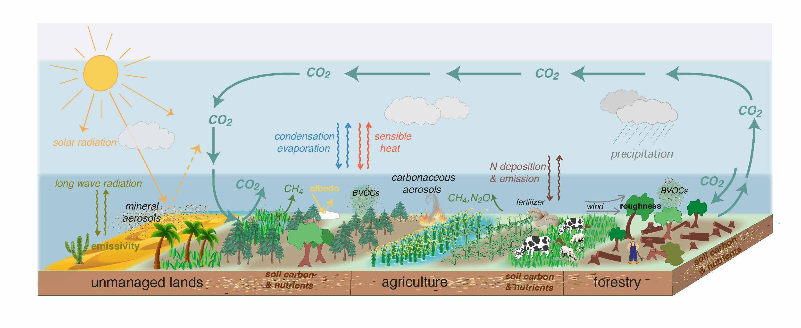
Über ihre Auswirkungen auf klimarelevante Treibhausgasflüsse hinaus stören Landnutzung und Landnutzungsveränderungen auch andere biogeochemische Materialkreisläufe, wie Nitrat-, Phosphor- oder Schwefelkreisläufe, und verknüpfen sie mit einer weiteren bereits überschrittenen planetaren Grenze – derjenigen der biogeochemischen Kreisläufe (Richardson et al. 2023). Ein klassisches Beispiel hierfür ist die Eutrophierung, ein Prozess, der auftritt, wenn landwirtschaftliche Düngemittel wie Phosphor in nährstoffarme Gewässer gelangen und zu übermässigem Algenwachstum, sogenannten Algenblüten, führen. Wenn diese Blüten verrotten, verringern sie den Sauerstoffgehalt, was aquatisches Leben letztlich einschränkt oder gar verhindert (Galloway et al. 2008; Smith et al. 2006).
In den Tropen sind die am besten an lokale Bedingungen angepassten Anbauformen (d. h. ohne Dünger oder andere Betriebsmittel) Agroforstwirtschaft und Brandrodung. Agroforstwirtschaft ist ein dauerhaftes Landnutzungssystem, in dem einjährige Feldfrüchte zusammen mit Bäumen angebaut werden oder mehrjährige Kulturen (z. B. Maniok, Vanille, Bananen und Lychees) gemeinsam gepflanzt werden. Brandrodung, auch bekannt als Wanderfeldbau, bezeichnet dagegen ein Landnutzungssystem, bei dem jedes Jahr eine andere Fläche gerodet und eine Ernte wie Mais angebaut wird, während die zuvor bebauten Felder brachliegen, um den Aufbau von Nährstoffen zu ermöglichen.
Wie oben erwähnt, ist die Brandrodung, wie sie in Madagaskar praktiziert wird, eine der Hauptursachen der globalen Entwaldung. Daher bekämpfen Regierungen und NGOs die Brandrodung seit der Kolonialzeit. Eine Herausforderung bei der Brandrodung ist, dass Bäuer*innen, wenn die Brachzeiten aufgrund von Landmangel zu kurz werden, in bisher ungenutzte Waldgebiete ausweichen und diese roden, um den Brandrodungszyklus aufrechtzuerhalten. Diese Entwaldung erzeugt erhebliche Biomasse, die verbrannt werden muss. In Madagaskar beispielsweise wurden innerhalb eines Monats von Mitte September bis Mitte Oktober 2023 mehr als 6.000 Brandstellen registriert.
Deshalb wird der lokalen Bevölkerung die Verantwortung für die Entwaldung in Madagaskar zugeschrieben. Doch Brandrodung ist eine notwendige Überlebensstrategie für die Einheimischen, die kaum Alternativen haben und auf sie angewiesen sind, um Land für künftige Generationen zu sichern. Dieser Zielkonflikt ist spezifisch ein Landnutzungskonflikt.
Ein weiteres Beispiel für einen Landnutzungskonflikt zeigt sich in der Schweiz, bei einem Interessenkonflikt zwischen einem dezentralen erneuerbaren Energieprojekt und Landschaftsdienstleistungen (vgl. Kienast et al. 2017). Im Jahr 2022 lancierte die Schweizer Regierung eine „Solaroffensive” in Form eines Projekts namens „Solar Express”. Ziel war es, alpine Photovoltaikanlagen durch hohe Subventionen zu fördern, die bis zu 60% der Investitionskosten abdecken sollten. Im Sommer 2024 fand in Sedrun, im östlichsten Kanton Graubünden, der Spatenstich für die erste Grossanlage mit einer Fläche von 300.000 m2 statt. Solche Grossanlagen kollidieren jedoch mit anderen Landnutzungen und beeinträchtigen insbesondere Agrarflächen, Naturschutzgebiete und Tourismusregionen. Solaranlagen verändern die Landschaft und könnten Flora und Fauna beeinflussen, was bei Bäuerinnen und Naturschutzorganisationen Befürchtungen über den Verlust von wertvollem Ackerland und Biodiversitätsflächen weckt. Gleichzeitig fordern Befürworterinnen erneuerbarer Energien die rasche Umsetzung dieser Projekte, um die Abhängigkeit der Schweiz von fossilen Brennstoffen zu reduzieren und das Klima zu schützen. Dies verdeutlicht die Spannung zwischen dem Bedarf an erneuerbaren Energien einerseits und dem Wunsch, Landschaft und Umwelt zu erhalten, andererseits.
Die Entwaldung in tropischen Regionen ist eine Form der Landnutzungsveränderung, die nicht nur von lokalen Bedürfnissen, sondern auch von internationalen Entscheidungen und Nachfragen beeinflusst wird (Curtis et al. 2018). Dies legt nahe, dass die Verhinderung von Entwaldung sowohl auf lokaler als auch auf internationaler Ebene angegangen werden muss (DeFries et al. 2010). Doch nicht nur die Entwaldung, sondern Landnutzungsveränderungen allgemein werden von entfernten Faktoren beeinflusst (Meyfroidt et al. 2013). In der Wissenschaft werden solche Phänomene und Prozesse als Telekopplung bezeichnet (Liu et al. 2013). Telekopplung beschreibt die sozioökonomischen und ökologischen Wechselwirkungen zwischen weit entfernten menschlichen und natürlichen Systemen und analysiert, wie Handlungen an einem Ort (dem Sendesystem) einen anderen Ort (das Empfangssystem) beeinflussen können. So verlangen neue EU-Verordnungen, dass Produkte, die ab Ende 2024 in den EU-Markt eingeführt werden, entwaldungsfrei sein müssen (Verordnung über entwaldungsfreie Produkte – Europäische Kommission (europa.eu)). Diese Verordnungen werden voraussichtlich erhebliche ökologische (und soziale) Auswirkungen in den Anbauländern haben (Coenen et al. 2023).
Landnutzung und Landnutzungsveränderungen sind eng mit Fragen der Landrechte und des Landbesitzes verknüpft, da diese Faktoren massgeblich bestimmen, wer zur Nutzung von Land berechtigt ist und wie es genutzt wird. Sicherer Landbesitz und klar definierte Landrechte sind entscheidend für nachhaltige Landnutzungspraktiken, da sie langfristige Investitionen in das Landmanagement fördern und den Schutz von Ressourcen begünstigen. Unsichere oder unklare Landrechte können hingegen zu Landnutzungsveränderungen führen, die die Umwelt schädigen, wie unkontrollierte Entwaldung. Diese Fragen werden im Zusammenhang mit Landraub besonders brisant, bei dem grosse Landflächen von ausländischen (oder auch inländischen) Investor*innen erworben werden, oft ohne angemessene Konsultation oder Entschädigung der lokalen Bevölkerung. Landraub kann zu Konflikten führen, die bestehende Landrechte untergraben und die Landnutzung auf eine Weise verändern, welche die ökologische und soziale Nachhaltigkeit gefährdet.
Dieses Kapitel hat gezeigt, dass Land, Landnutzung und Landnutzungsveränderungen ein vielschichtiges Thema sind. Um die Bedeutung dieses Themas zu unterstreichen, haben Meyfroidt et al. (2022) zehn Fakten über Landsysteme für die Nachhaltigkeit zusammengefasst (Figure fig-ten-facts, links), die auf empirischer Forschung basieren. Diese Fakten führen wiederum zu zehn damit verbundenen Herausforderungen (Meyfroidt et al. 2022). Fakt 2 etwa („Land als komplexe Systeme”) führt zu der Herausforderung, dass die Folgen von Eingriffen in Landsysteme schwer vorherzusagen und zu verstehen sind, was die Entwicklung wirksamer Massnahmen oder Politiken zur Landnutzung erschwert. Einige der in diesem Kapitel diskutierten Themen stimmen mit diesen Fakten überein, beispielsweise Telekopplung und Fakt 5, „Entfernte Verbindungen”.
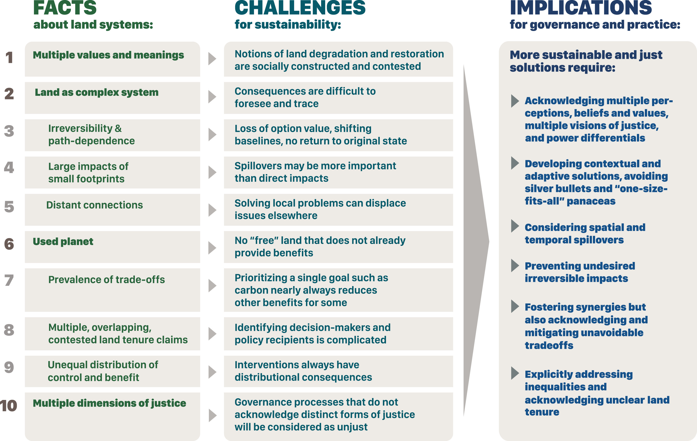
Ein weiteres Beispiel für Landnutzungsveränderungen und ihre weitreichenden Auswirkungen sind kommerzielle Landinvestitionen in Laos. Die Demokratische Volksrepublik Laos ist ein bergiges Binnenland mit einer hohen Armutsquote und einigen wenigen kleinen städtischen Zentren. Laos liegt zwischen China, Vietnam, Thailand, Kambodscha und Myanmar und öffnete sich in den 1990er Jahren aus seiner kommunistischen Isolation. Das Land ist reich an natürlichen Ressourcen wie Land, Wäldern und Mineralien. Um das nationale Wirtschaftswachstum zu fördern, verfolgt die Regierung von Laos eine Strategie der „Umwandlung von Land in Kapital”, d. h. der Umwandlung von „ungenutztem” Land in produktives Land, in der Hoffnung, durch Spillover-Effekte eine ländliche Entwicklung zu erzielen. Diese Strategie wird hauptsächlich durch kommerzielle Landinvestitionen umgesetzt, bei denen die Regierung inländischen und ausländischen Investor*innen Landkonzessionen erteilt.
Doch inwiefern trägt diese Politik tatsächlich zur nachhaltigen Entwicklung bei? Um dies herauszufinden, arbeiteten Wissenschaftlerinnen des Centre for Development and Environment (CDE) mit der Regierung von Laos zusammen, um Landkonzessionen zu erfassen und die Qualität der Investitionen zu untersuchen. Es wurde ein nationales digitales Informationssystem entwickelt, das Laos ermöglicht, seine Landkonzessionen effektiv zu verwalten. Das System zeigte auch, dass nicht alle Investorinnen ihre Versprechen einhalten, was die Nachhaltigkeit dieser Landnutzungsstrategie in Frage stellt.
Die Landnutzungsveränderungen hin zu Bananenplantagen, anderen Baumplantagen wie Kautschukplantagen, Minen und Wasserkraftprojekten führten unter anderem zu einem Verlust an Waldflächen – etwa ein Drittel aller Konzessionen wurde in nationalen Waldgebieten erteilt. Dies führte auch zu einem Verlust wichtiger Ökosystemdienstleistungen und einem Rückgang der Biodiversität. Über die ökologischen Auswirkungen auf die lokale Umwelt hinaus hatten die Landinvestitionen auch sozioökonomische Konsequenzen. Obwohl für einige das finanzielle Einkommen gestiegen ist, wirkten sich die Landinvestitionen in vielen Gebieten negativ auf das Wohlbefinden der lokalen Bevölkerung aus und beeinträchtigten die Ernährungssicherheit sowie den Zugang zu Land und natürlichen Ressourcen, die für subsistenzorientierte Lebensweisen unerlässlich sind (Nanhthavong et al. 2021; Hett et al. 2020).
3.4 Biodiversitätsverlust
Biodiversität ist definiert als die Vielfalt des Lebens in all seinen Formen, von Genen über Arten bis hin zu Ökosystemen (CBD, 1992). Sie ist eine wesentliche Grundlage für das Wohlergehen der Menschheit und damit ein wesentlicher Bestandteil der ökologischen Nachhaltigkeit, die die Basis für zahlreiche Ökosystemdienstleistungen (Haines-Young and Potschin-Young 2010) oder Naturbeiträge für Menschen (Antunes et al. 2024) bildet. Biodiversität ist auch eng mit mehreren planetaren Grenzen verknüpft, insbesondere mit Landnutzungsveränderungen und der Integrität der Biosphäre (Steffen et al. 2015). Es ist klar, dass ein unkontrollierter Biodiversitätsverlust Kipppunkte in Ökosystemen auslösen, das Gleichgewicht der Erde stören und die Fähigkeit unseres Planeten, menschliches Leben zu erhalten, schwer beeinträchtigen könnte. Der Schutz und die Wiederherstellung der Biodiversität gelten daher als Schlüssel zu einer nachhaltigen Zukunft.
Dennoch befindet sich die Biodiversität derzeit in einem alarmierenden Zustand (vgl. Infokasten unten). Weltweit nimmt die Artenvielfalt seit mehreren Jahrzehnten ab (Butchart et al. 2010; Díaz and Malhi 2022), ein Abwärtstrend, der laut Prognosen anhalten wird (Díaz and Malhi 2022). Infolgedessen wird bereits ein sechstes Massenaussterben diskutiert (Ceballos et al. 2020). Um dieser Entwicklung entgegenzuwirken, wurde das Übereinkommen über die biologische Vielfalt (CBD) auf dem Rio-Erdgipfel 1992 ratifiziert (CBD, 1992), unter Schweizer Beteiligung. Dieses rechtlich bindende Abkommen bedeutet, dass neue Bestimmungen, die an nachfolgenden Konferenzen beschlossen werden, rechtlich umgesetzt werden müssen, wenn die Schweiz Delegierte schickt.
Das Biodiversitätsmonitoring ist ein wichtiges Instrument zur Verfolgung von Veränderungen in der Biodiversität. Die Rote Liste gefährdeter Tier- und Pflanzenarten der Internationalen Union zur Bewahrung der Natur (IUCN), die seit 1964 geführt wird, spielt dabei eine besonders wichtige Rolle. Sie kategorisiert den Status einer Art in eine von neun Kategorien, von „nicht gefährdet” bis „ausgestorben”. Abbildung Figure fig-IUCN-red-list zeigt beispielsweise den Prozentsatz der Arten in jeder Kategorie auf globaler Ebene. Dieselben Kategorien werden auch in der Schweiz verwendet. Solche Datenbanken helfen unter anderem, die Politikgestaltung und Naturschutzplanung zu verbessern und eine angemessenere Zuweisung von (finanziellen) Ressourcen in Forschung und Gesellschaft zu ermöglichen. Trotz des umfangreichen und etablierten Artenmonitorings gehen vorsichtige Studien davon aus, dass nur zwischen 1,5% und 18% der terrestrischen Wirbeltierspezies unseres Planeten identifiziert und beschrieben wurden (vgl. Moura and Jetz 2021).
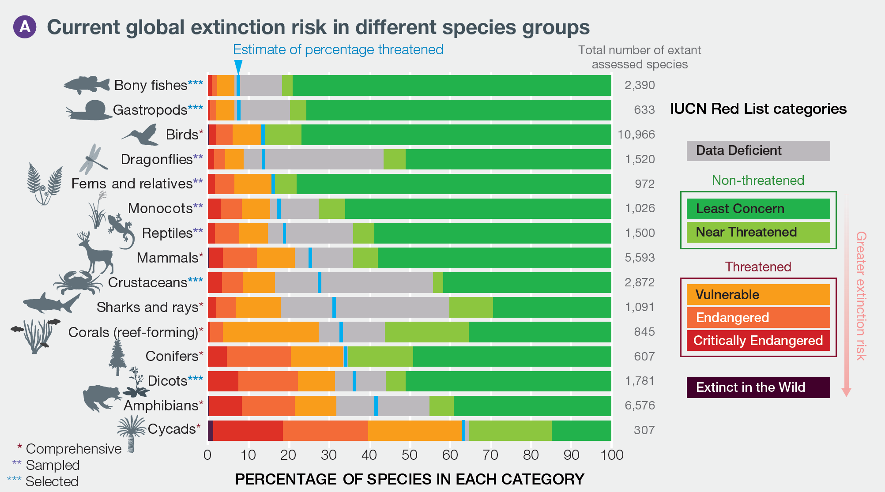
Trotz solcher internationaler Bemühungen steht die globale Biodiversität unter einem beispiellosen Druck. Dies ist auf direkte und indirekte Treiber (Figure fig-drivers-biodiversity-loss) zurückzuführen, die sich in den letzten 50 Jahren erheblich beschleunigt haben (IPBES 2019, 25). So haben menschliche Aktivitäten wie Landnutzungsveränderungen natürliche Lebensräume drastisch verändert und verkleinert, was zu einem erheblichen Verlust an Arten und genetischer Vielfalt geführt hat (Pereira et al. 2010). Darüber hinaus ist der Artenverlust auch eng mit dem anthropogenen Klimawandel verknüpft (vgl. Kapitel), da steigende Temperaturen viele Gebiete und Regionen für bestimmte Arten unbewohnbar machen bzw. machen werden (WWF 2022, 16). Dieser Rückgang gefährdet nicht nur die Stabilität der Ökosysteme, sondern letztlich auch die langfristige Nachhaltigkeit menschlicher Gesellschaften (Cardinale et al. 2012).
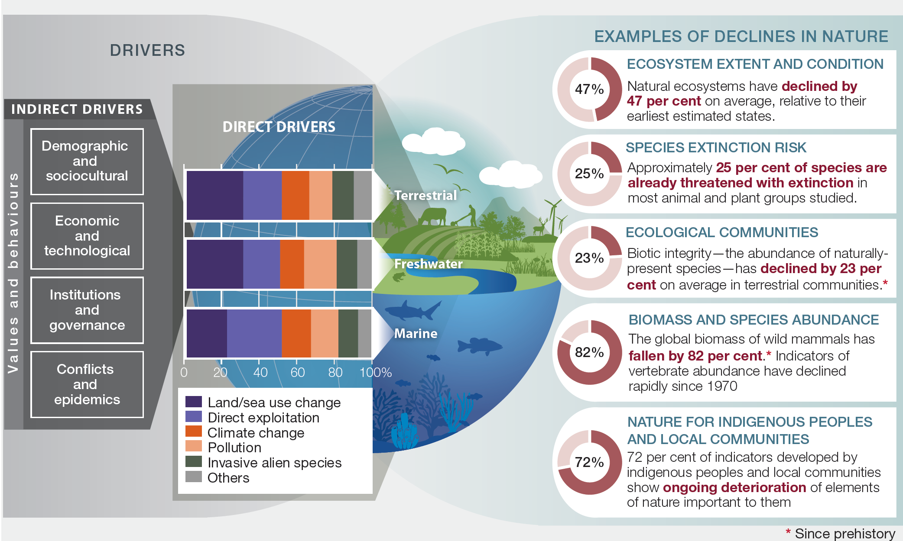
Das jüngste wichtige internationale Abkommen, der Globale Biodiversitätsrahmen Kunming-Montreal (UNEP-CBD 2022), setzt neue Ziele und Vorgaben (Figure fig-global-biodiversity-frame), die den globalen Biodiversitätsschutz fokussierter gestalten sollen. Ein zentrales Ziel ist Ziel 3, das festlegt, dass bis 2030 mindestens 30% aller Land- und Meeresgebiete, insbesondere solche mit hoher ökologischer Bedeutung, durch ein System von Schutzgebieten bewahrt werden müssen. Studien haben gezeigt, dass gut verwaltete Schutzgebiete die Biodiversität wirksam erhalten können. Allerdings waren bis 2024 nur 16,32% der terrestrischen Flächen und 8,35% der Meeresgebiete geschützt (Protected Planet, 2025). Radikalere Ansätze fordern sogar 50% Schutzgebiete (das Half Earth Project).

Studien und Wissenschaftler*innen haben jedoch Bedenken hinsichtlich der Wirksamkeit und der (Umwelt-)Gerechtigkeit von Schutzgebiets- und Half-Earth-Ansätzen geäussert (vgl. Büscher et al. 2017; Schleicher et al. 2019). Trotz einer Zunahme der von Schutzgebieten bedeckten Fläche in den letzten Jahrzehnten nimmt die Biodiversität weiterhin ab. Einerseits können prozentbasierte Ziele falsche Anreize setzen, indem Regierungen dazu verleitet werden, Naturschutzgebiete in Gebieten auszuweisen, in denen sie wenig Nutzen bringen oder nur als Papiertiger dienen (Visconti et al. 2019). Andererseits entzieht die Ausweisung strenger Schutzgebiete lokalen Bevölkerungsgruppen, insbesondere indigenen Gruppen, oft den Zugang zu den Gebieten, auf die sie für ihren Lebensunterhalt angewiesen sind – oder sie zwingt sie zur Umsiedlung. Studien haben gezeigt, dass die Beteiligung lokaler Bevölkerungsgruppen ein entscheidender Faktor für den langfristigen Erhalt und die Integrität von Schutzgebieten und damit der Biodiversität ist (Andrade and Rhodes 2012). IPBES (2019, 32) erkennt ebenfalls die Bedeutung indigener und lokaler Gemeinschaften für den Schutz von Biodiversität und Ökosystemdienstleistungen an. Eine Studie von Fa et al. (2020) beispielsweise zeigt, wie die Einbeziehung indigener Gemeinschaften dem Naturschutz zugutekommen kann. Die Studie zeigt, dass indigene Territorien weltweit – und insbesondere in den Tropen – eine entscheidende Rolle beim Schutz der Biodiversität und der Eindämmung der Entwaldung spielen. Die Studie vergleicht die Entwaldungsraten in verschiedenen Schutzgebieten und zeigt, dass die Entwaldung in Gebieten unter indigener Verwaltung deutlich geringer ist als in staatlich geschützten Regionen.
Die Zwischenstaatliche Plattform für Biodiversität und Ökosystemdienstleistungen (IPBES) ist ein unabhängiges zwischenstaatliches Gremium, das von verschiedenen Ländern gegründet wurde, um die Wissenschaft-Politik-Schnittstelle für Biodiversität und Ökosystemdienstleistungen zugunsten der Erhaltung und nachhaltigen Nutzung der Biodiversität, des langfristigen menschlichen Wohlergehens und der nachhaltigen Entwicklung zu stärken. Sie wurde am 21. April 2012 in Panama-Stadt von 94 Regierungen gegründet. Die Sekretariatsleistungen für IPBES werden vom Umweltprogramm der Vereinten Nationen (UNEP) erbracht, obwohl IPBES kein UN-Organ ist. Heute gilt IPBES, das das NCP-Konzept entwickelt hat, als Gegenstück zum IPCC (IPBES-Sekretariat, 2017).
Wie Landnutzungsveränderungen (Verweis) und Ökosystemdienstleistungen (Verweis) sind auch Biodiversitätsschutz und Naturschutz in verschiedene Werte und Visionen eingebettet, die zu Interessenkonflikten zwischen verschiedenen Stakeholdern führen können. Diese Werte und die daraus resultierenden Ansätze werden in der Regel in drei Typen unterteilt: intrinsische, instrumentelle und relationale Werte (Durán et al. 2023): mit anderen Worten, „Natur um ihrer selbst willen”, „Natur als Kultur” und „Natur für die Gesellschaft” (Figure fig-NFF). Das Konzept der Ökosystemdienstleistungen beispielsweise fällt unter „Natur für die Gesellschaft”, da es einer utilitaristischen Sichtweise der Natur entspricht, bei der die Gesellschaft den grösstmöglichen Nutzen aus der Natur zieht (ohne ihr zu schaden). Im Gegensatz dazu kann ein Naturpark, der strengen Naturschutz oder die Rewilding von Gebieten priorisiert, als Verkörperung intrinsischer Werte eingestuft werden, weil menschliche Eingriffe und damit die Auswirkungen auf die Natur minimiert werden. Diese „Natur um ihrer selbst willen”-Erzählung erstreckt sich auch auf Konzepte wie Smart Cities, da diese darauf abzielen, menschliche Aktivitäten so effizient wie möglich auf städtische Gebiete zu beschränken. Die Vision „Natur als Kultur” stellt eine Welt dar, in der Werte wie Gegenseitigkeit und Harmonie die menschlichen Beziehungen zur Natur auf allen Ebenen definieren. Hier werden biologische Vielfalt und kulturelle Vielfalt gemeinsam in eng verknüpften biokulturellen Systemen bewahrt und gepflegt. Diese Systeme werden von lokalen, selbstbestimmten Governance-Strukturen getragen, die die indigene Souveränität und lokale Identitäten respektieren. Der wirtschaftliche Austausch priorisiert den sozialen Wert von Gütern gegenüber ihrem monetären Wert. Diese Vision umfasst beispielsweise lokale und dezentralisierte Nahrungsmittelproduktion sowie Gemeinschaften, die in einem resilienten, biokulturellen Netzwerk mit tiefen spirituellen Verbindungen zur Natur operieren.
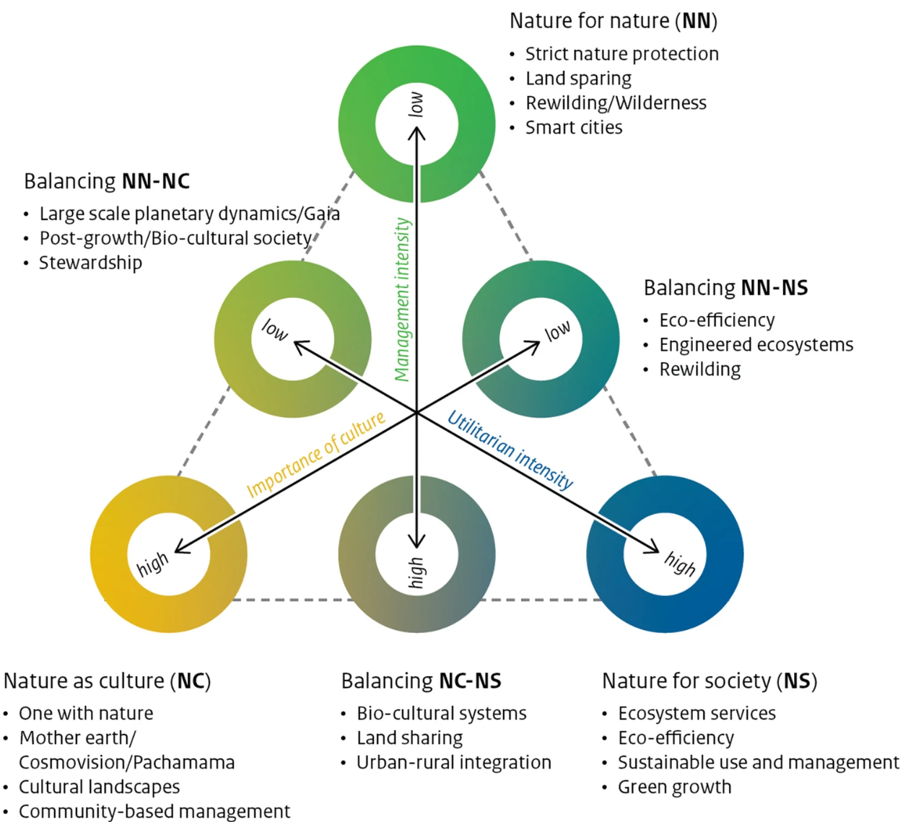
Die unterschiedlichen Werte, die mit Biodiversität und Natur verknüpft sind – und in welchem Umfang sie geschützt werden sollten –, erfordern daher eine normative Beurteilung. Sie basieren nicht nur auf empirischem Systemwissen, sondern auch auf ethischen Grundsätzen, wie zu Beginn von Kapitel 3 erläutert.
Wie wir gesehen haben, und wie bei anderen Nachhaltigkeitsherausforderungen und -dimensionen, gibt es keinen etablierten Konsens darüber, wie Nachhaltigkeit in der ökologischen Dimension am besten umgesetzt und erreicht werden kann. Auch in dieser Dimension bleibt nachhaltige Entwicklung ein gesellschaftlicher Aushandlungs- und Entscheidungsprozess. Angesichts der Vielfalt unterschiedlicher Perspektiven und Interessen verschiedener Stakeholder variieren auch die Präferenzen hinsichtlich Ansätzen und Massnahmen. Um geeignete Massnahmen auszuwählen und die verschiedenen Verantwortungsebenen zu harmonisieren (Figure fig-SD-ethics), können wir uns beispielsweise auf Hans Jonas’ (1979) Verantwortungsethik beziehen, die wir zu Beginn des Buches kennengelernt haben. Die Integration dieser verschiedenen Verantwortungsbereiche kann eine ganzheitliche und nachhaltige Ethik fördern, die die Bedürfnisse und Interessen aller Aspekte des Lebens und der Natur angemessen berücksichtigt.
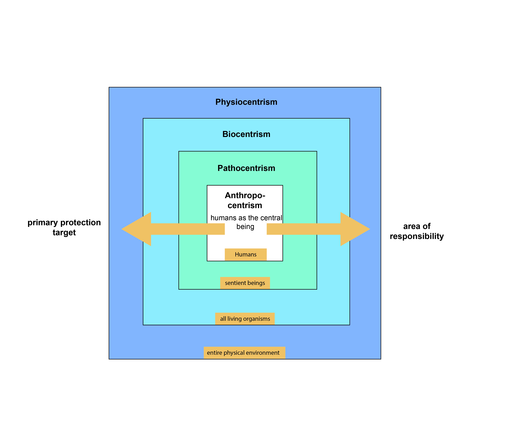
3.5 Strategische Ansätze
Heutzutage werden verschiedene Strategien verfolgt oder zumindest in Betracht gezogen, um eine Transformation in der ökologischen Dimension der nachhaltigen Entwicklung zu erreichen (vgl. Figure fig-GDSR für eine nicht abschliessende Aufzählung). Einige dieser Strategien wurden bereits in diesem Lehrbuch besprochen. Obwohl die genannten Ansätze nicht zwingend per se transformativ sein müssen, können sie bei geeigneter Anwendung durchaus Auswirkungen auf die ökologische Dimension der Nachhaltigkeit haben. Die in diesem Abschnitt vorgestellten Ansätze werden gemäss den „Hebeln für die Transformation” des Global Sustainable Development Report (GSDR) kategorisiert. Der GSDR 2019 definiert vier Hebel: Governance, Wirtschaft und Finanzen, individuelle und kollektive Handlungen sowie Wissenschaft und Technologie. Der GSDR 2023 fügte einen fünften Hebel hinzu – Kapazitätsaufbau –, da dieser sowohl als Hebel selbst als auch als unterstützender Faktor für die anderen Hebel für einen transformativen Prozess unerlässlich ist (Independent Group of Scientists appointed by the Secretary-General, 2023).
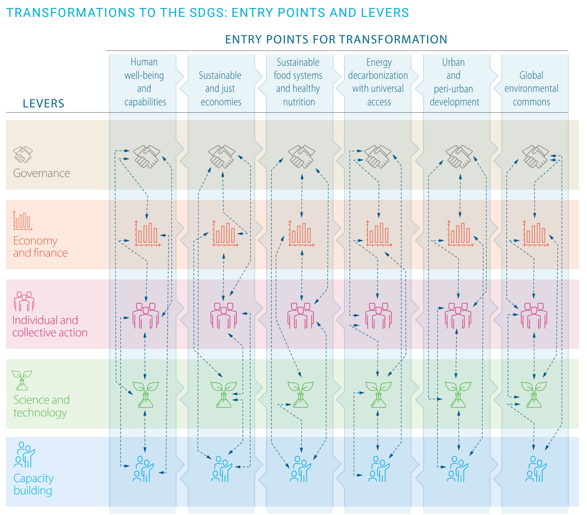
Für jeden Hebel stellen wir ausgewählte Strategien vor, die mit unseren drei Schwerpunktthemen in diesem Kapitel – Klima, Landnutzung oder Biodiversität – zusammenhängen:
Der Governance-Hebel umfasst Institutionen und Räume, die die Entwicklungsrichtung bestimmen, indem sie Ziele setzen, Massnahmen koordinieren, Regulierungen schaffen und die Finanzierung auf nationaler und regionaler Ebene erleichtern. Gute Governance sollte auch Synergien fördern, Interessenkonflikte berücksichtigen und die Zusammenarbeit zwischen einem breiten Spektrum von Stakeholdern stärken. Governance spielt damit eine Schlüsselrolle bei der Entwicklung und Umsetzung von Strategien zur ökologischen Nachhaltigkeit, da sie den politischen Rahmen für nachhaltige Praktiken durch regulatorische Mechanismen, Anreizstrukturen und Gesetze schaffen kann. Zu den Governance-Hebeln gehören:
Schaffung von Schutzgebieten zur Erhaltung der Biodiversität
Subventionen für nachhaltige Praktiken, wie Direktzahlungen für biodiversitätsfreundliche Bewirtschaftungsmethoden
Der Hebel Wirtschaft und Finanzen bezieht sich in erster Linie auf die erheblichen öffentlichen und privaten Investitionen, die zur Erreichung der SDGs und der Transformation erforderlich sind (global zwischen 1,4 und 2,5 Billionen US-Dollar pro Jahr). Dieser Hebel ist damit ein wichtiger Ermöglicher von Strategien und Politiken zur ökologischen Nachhaltigkeit, beispielsweise durch die Finanzierung nachhaltiger Technologien. Beispiele umfassen:
Zahlungen für Ökosystemdienstleistungen (PES)
REDD+-Programme zur Reduzierung von Entwaldung und zur Förderung nachhaltiger Landnutzung
Der Hebel Wissenschaft und Technologie bezieht sich auf soziale und technologische Innovationen sowie auf kosteneffektive und skalierbare Technologien. Dazu gehören Investitionen in Forschung und Entwicklung, die Förderung einer stärkeren internationalen Zusammenarbeit und die Ermöglichung des Zugangs zu bewährten Technologien (insbesondere für Länder mit niedrigem Einkommen). Wissenschaft kann dabei helfen, komplexe Zusammenhänge zu erklären und evidenzbasierte Lösungen zu entwickeln. Wesentliche Hebel für Nachhaltigkeitstransformationen umfassen:
Technologien zur Kohlenstoffbindung
Naturbasierte Lösungen, die natürliche Prozesse nutzen, um dem Klimawandel und Umweltproblemen zu begegnen
Innovative Landnutzungssysteme, wie Agroforstwirtschaft
Individuelle und kollektive Handlungen
Sozialer Wandel beginnt oft in den Herzen und Köpfen der Menschen durch lokale Organisation und Mobilisierung, bevor er sich in Gesetze und Wirtschaftspolitik übersetzt. Wenn eine kritische Masse neue Praktiken oder Normen annimmt, kann dies durch Bildung, Informationskampagnen, finanzielle Anreize und Gesetzgebung unterstützt und auf die gesamte Gesellschaft ausgedehnt werden. Beispiele für Nachhaltigkeitsstrategien und -politiken im Bereich der individuellen und kollektiven Handlungen umfassen:
Kampagnen für nachhaltigen Konsum, die Konsument*innen motivieren, umweltfreundliche Produkte zu wählen
Förderung solidarischer Landwirtschaftsmodelle (SoLaWi), die die regionale und ökologische Nahrungsmittelproduktion stärken
Kapazitätsaufbau
Der Kapazitätsaufbau zur Unterstützung der Transformation zur Erreichung der SDGs ist vielschichtig und hängt von den Zielen, den erforderlichen Transformationen sowie dem spezifischen Landes- oder Regionalkontext ab. Unter anderem sind Kompetenzen in den Bereichen strategische Ausrichtung, Innovation, Koordination, Lernen und Resilienz erforderlich. Zu den Strategien und Politiken zur ökologischen Nachhaltigkeit im Zusammenhang mit dem Kapazitätsaufbau-Hebel gehören:
Einrichtung von Beratungszentren oder digitalen Plattformen zur Ermöglichung kontinuierlichen Lernens und des Austauschs bewährter Praktiken, z. B. im Bereich der Agroforstwirtschaft
Unterstützung lokaler Initiativen zur Verbesserung des Wissenstransfers
Hinweis: Es ist wichtig zu beachten, dass Ansätze nicht immer synergetisch sind; oft gehen Ansätze, die eine ökologische Dimension der Nachhaltigkeit adressieren, mit Zielkonflikten mit anderen Ansätzen oder mit der sozialen oder wirtschaftlichen Dimension der Nachhaltigkeit einher.
- Guyer, Madeleine, Myriam Steinemann, and Nina Saalismaa. 2022. Biodiversity and Sustainable Development. Climate Change & Environment Nexus Brief. Swiss Agency for Development and Cooperation.
3.6 Quiz me if you can
Welche der folgenden Aussagen zum Konzept der Ökosystemdienstleistungen sind korrekt? (Mehr als eine Aussage kann richtig sein.)
Das Konzept der Ökosystemdienstleistungen bezeichnet die direkten und indirekten Vorteile, die Menschen aus Ökosystemen ziehen, und ist damit ausdrücklich anthropozentrisch. Eine gängige Klassifikation unterscheidet vier Arten von Ökosystemdienstleistungen: Versorgungs-, Regulierungs-, kulturelle und Unterstützungsdienstleistungen. Die übrigen Aussagen verwechseln Ökosystemdienstleistungen mit Biodiversitätsmassen, ökologischen Produktivitätsmassen, Schutzmassnahmen, alternativen Klassifikationen oder unverwandten kulturellen bzw. religiösen Konzepten.
- True
- False
- False
- False
- False
- False
- False
- True
Was sind die vier Hauptkategorien von Ökosystemdienstleistungen?
Ökosystemdienstleistungen werden gängigerweise in vier Hauptkategorien eingeteilt: Versorgungsdienstleistungen (z. B. Nahrung und Rohstoffe), Regulierungsdienstleistungen (z. B. Klimaregulierung), kulturelle Dienstleistungen (z. B. Erholung und spirituelle Werte) und Unterstützungsdienstleistungen (z. B. Nährstoffkreisläufe und Bodenbildung).
- False
- False
- True
Welche der folgenden Aussagen treffen auf das Konzept der Ökosystemdienstleistungen zu, welche nicht? (Mehr als eine Aussage kann richtig sein.)
Das Konzept der Ökosystemdienstleistungen bezeichnet die direkten und indirekten Beiträge von Ökosystemen zum menschlichen Wohlergehen und wird meist in vier Kategorien gegliedert: Versorgungs-, Regulierungs-, kulturelle und Unterstützungsdienstleistungen. Es dient weder als direktes Mass für Biodiversität oder Ökosystemresilienz, noch beschreibt es biophysikalische Produktivitätsmasse wie die jährliche Biomasseanhäufung.
- True
- True
- False
- False
Welche der folgenden sind Arten von Rückkopplungsmechanismen im Klimasystem? (Mehr als eine Aussage kann richtig sein.)
Rückkopplungsmechanismen im Klimasystem beschreiben Prozesse, die Veränderungen im Klimasystem entweder verstärken (positive Rückkopplung) oder abschwächen (negative Rückkopplung). Neutrale Rückkopplung wird in der Klimawissenschaft üblicherweise nicht als eigene Kategorie verwendet.
- True
- True
- False
Welche der folgenden sind direkte Treiber des Biodiversitätsverlusts? (Mehr als eine Aussage kann richtig sein.)
Direkte Treiber des Biodiversitätsverlusts sind Faktoren, die unmittelbar auf Ökosysteme und Arten einwirken. Dazu gehören Landnutzungsveränderungen (z. B. Zerstörung von Lebensräumen), Umweltverschmutzung und Klimawandel. Wirtschaftspolitik hingegen gilt als indirekter Treiber, da sie den Biodiversitätsverlust über sozioökonomische Wirkungspfade beeinflusst und nicht durch direkten ökologischen Druck.
- False
- True
- True
- True
Welche der folgenden Aussagen beschreiben Landnutzungsveränderungen und verwandte Konzepte korrekt? (Mehr als eine Aussage kann richtig sein.)
Landbedeckung beschreibt die biophysikalischen Eigenschaften der Landoberfläche, während Landnutzung bezeichnet, wie Menschen dieses Land nutzen. Landnutzungsveränderung umfasst den Wechsel von einer Landnutzungsart zu einer anderen und ist eng mit menschlichen Aktivitäten verknüpft. Solche Veränderungen können die Biodiversität bedrohen, Ökosystemfunktionen stören, Treibhausgasemissionen erhöhen und Ökosystemdienstleistungen verringern, was wiederum das menschliche Wohlergehen beeinträchtigt. Landdegradation erfasst den Verlust der Landproduktivität infolge von Landnutzung, und Landsysteme integrieren ausdrücklich soziale, wirtschaftliche, technologische und ökologische Dimensionen.
- False
- True
- True
- True
- False
- True
Welche Merkmale unterscheiden „Naturbeiträge für Menschen (NCP)” von „Ökosystemdienstleistungen”? (Mehr als eine Aussage kann richtig sein.)
Das von IPBES eingeführte Konzept der Naturbeiträge für Menschen (NCP) erweitert das Rahmenwerk der Ökosystemdienstleistungen, indem es ausdrücklich intrinsische und relationale Werte der Natur einbezieht und indigene sowie lokale Wissenssysteme integriert. Es ist weder auf monetäre Bewertung beschränkt, noch konzentriert es sich ausschliesslich auf Versorgungsfunktionen.
- False
- True
- True
- False